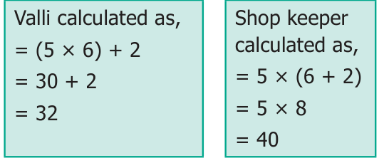
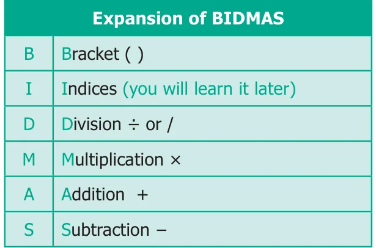

Think about the situation
Valli and her four friends went to a butter milk shop. Each had a cup of butter milk and paid ₹30, assuming that the cost of one cup of butter milk to be ₹6. But the shop keeper told that the cost of butter milk per cup had increased by ₹2. Then, Valli decided to give ₹2 more and paid ₹32. But the shop keeper claimed that she had to pay ₹40. Who is correct?

The amount ₹40 claimed by the Shop keeper is correct. This confusion can be avoided by using the brackets in the correct places like \(5 \times (6 + 2)\).
The rule of order of operations is called as BIDMAS. In BIDMAS the operations done from left to right.

Now, we try to solve \(9 + 5 \times 2\) by using BIDMAS,
\(9 + (5 \times 2) = 9 + 10\)
\(= 19\)
Example 1.10
Simplify : \(24 + 2 \times 8 \div 2 - 1\)
Solution
\(24 + 2 \times 8 \div 2 - 1\) (given question)
\(= 24 + 2 \times 4 - 1\) (\(\div\) operation, completed first)
\(= 24 + 8 - 1\) (\(\times\) operation, completed second)
\(= 32 - 1\) (\(+\) operation, completed third)
\(= 31\) (\(-\) operation, completed last)
Example 1.11
Simplify : \(20 + [8 \times 2 + \{(6 \times 3) - (10 \div 5)\}]\)
Solution
Given,
\(20 + [8 \times 2 + \{(6 \times 3) - (10 \div 5)\}]\)
\(= 20 + [8 \times 2 + \{(6 \times 3) - 2\}]\) (\(\div\) completed first)
\(= 20 + [8 \times 2 + \{18 - 2\}]\) (\(\times\) completed second)
\(= 20 + [8 \times 2 + 16]\) (\(\{\ \}\) completed third)
\(= 20 + [16 + 16]\) (\(\times\) completed fourth)
\(= 20 + 32\) ([ ] operation completed fifth)
\(= 52\) (\(+\) completed last)